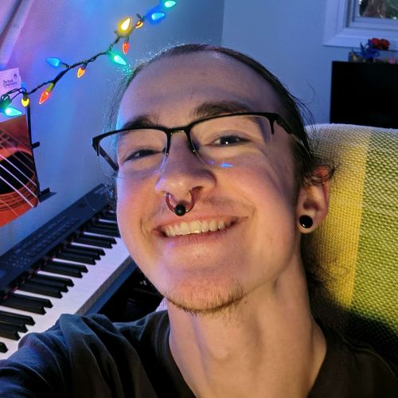
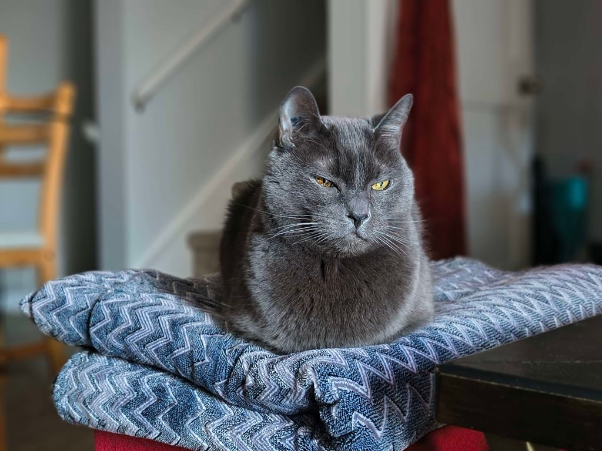

All About Valentine

Hi! I'm Valentine, a Calgary-based acrylic painter. Valentine is a name with personal significance that I have chosen to make my art under, but in my daily life I also go by Vitaliy, or variations of either name.
Art is something that I have always been naturally drawn to, but that ended up on the back burner as school became much busier. Last year I had the time to jump back into painting, and I am very glad that art has come back into my life in such a big and unexpected way. I'm very interested to see where following this path will lead me!

My formal education is in the field of computer science, which I hope to continue to develop and pursue in parallel with my painting. I have no formal art education, though I attended some informal art classes under several different artists while in elementary school, so I am not entirely self-taught.
Two of my main interests at the moment are pet portraits and paintings of cars. These may feel like a strange combination, but both involve precision and immense satisfaction when all their details come together into a recognizable individual!
Outside of Painting
My primary full-time job is taking care of a grumpy old man (Mr. Mimino, pictured below).

In my free time I like to hang out with close friends and family, experiment with makeup and outfits, and take photos using my instant film camera.